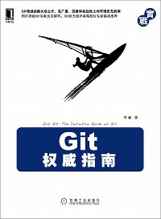

<div class='home-box' id='home-left'>
  <h2><a href='atom.xml' class='float-right'
      ></a
      >最新博客（<a href='/blog.html'>更多</a>）</h2>
  
{% for post in site.posts limit:page.full_posts %}
  <div class='post'>
    <span class='date'>{{post.date | date_to_string}}</span>
    <h1><a href='{{post.url}}'>{{post.title}}</a></h1>
    <div class='body'>{{post.content}}</div>
    <a href='{{post.url}}#disqus_thread'>View Comments</a>
  </div>
{% endfor %}

</div>

<div class='home-box' id='home-right'>
  <h2>我的书</h2>
  <div class='sidebar'>
    <div class="sidebar-item">
      <a href="http://www.worldhello.net/gotgit/"><br></a>
      <h3><a href="http://www.worldhello.net/gotgit/"> 《Git权威指南》 </a></h3>
      <ul>
        <li>机械工业出版社，2011.6</li>
        <li>ISBN 978-7-111-34967-9</li>
      </ul>
      感谢支持，购买请访问：<a href="http://www.worldhello.net/gotgit/">GotGit</a>。
    </div>
    <div class="sidebar-item">
      <a href="http://www.worldhello.net/gotgithub/"><br></a>
      <h3><a href="http://www.worldhello.net/gotgithub/">《GotGitHub》</a></h3>
      <ul>
        <li>一本以 Creative Commons 协议发布的电子书</li>
        <li>您可以用GitHub方式 <a href="https://github.com/gotgit/gotgithub">参与维护</a></li>
        <li>阅读本书：<a href="http://www.worldhello.net/gotgithub">GotGitHub</a></li>
      </ul>
    </div>
  </div>

  <h2>联系方式</h2>
  <div class='sidebar'>
    <div class="sidebar-item">
    <dl>
      <dt>邮件：</dt>
      <dd>worldhello.net AT gmail.com </dd>

      <dt>微博：</dt>
      <dd><a href="http://weibo.com/gotgit">http://weibo.com/gotgit</a></dd>

      <dt>公司：</dt>
      <dd><a href="http://www.ossxp.com/">http://www.ossxp.com</a></dd>

    </dl>

    </div>
  </div>

</div>
